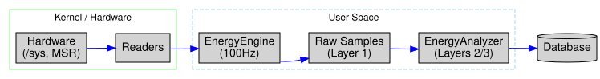

Data Flow¶
This document describes how energy data moves through the A-LEMS system, from hardware sensors to the database.
🔄 Data Flow Overview¶
A-LEMS captures energy data at 100Hz and processes it through a 5-stage pipeline:
Detailed Flow:¶
| Step | Component | Function |
|---|---|---|
| 1 | Hardware | RAPL counters, MSR registers, perf events |
| 2 | Readers | RAPLReader, MSRReader, PerfReader, etc. |
| 3 | EnergyEngine |
100Hz sampling, synchronization |
| 4 | Samples | Raw energy samples with timestamps |
| 5 | Database | Persistent storage in SQLite |

📡 Stage 1: Hardware Sources¶
A-LEMS reads from multiple hardware sources simultaneously:
| Source | Location | Data Provided |
|---|---|---|
| RAPL | /sys/class/powercap/intel-rapl |
Package, core, uncore, dram energy (µJ) |
| MSR | /dev/cpu/*/msr |
C-state counters, ring bus frequency |
| Perf | perf_event_open |
Instructions, cycles, cache misses |
| Turbostat | turbostat subprocess |
CPU frequency, C-state %, temperature |
| Thermal | /sys/class/thermal |
Thermal zone temperatures |
| Scheduler | /proc/stat, /proc/loadavg |
Context switches, interrupts |
🔧 Stage 2: Hardware Readers¶
Each hardware source has a dedicated reader class:
Hardware Readers¶
All hardware readers follow a common interface pattern:
| Reader | Metrics | Frequency | Description |
|---|---|---|---|
RAPLReader |
package, core, uncore, dram energy (µJ) | 100Hz | Intel Running Average Power Limit counters |
MSRReader |
C-state counters, ring bus freq | Snapshots | Model-specific registers for CPU power states |
PerfReader |
instructions, cycles, cache misses | Process-attached | Linux perf events for performance counters |
TurbostatReader |
CPU freq, C-state %, package temp | 10Hz | Intel turbostat utility wrapper |
SensorReader |
Thermal zone temperatures | 1Hz | System thermal sensors |
SchedulerMonitor |
Context switches, interrupts | 10Hz | Linux scheduler metrics |
Key Methods¶
All readers implement:
read()→ Returns current measurements as dictionarycalibrate()(optional) - One-time calibrationget_metadata()(optional) - Reader information
Each reader provides: - On-demand reads for start/stop snapshots - Continuous sampling for high-frequency data
⚙️ Stage 3: EnergyEngine¶
The EnergyEngine orchestrates all readers with perfect synchronization:
Sampling Thread¶
def _sampling_loop(self):
"""100Hz sampling thread"""
interval = 1.0 / self.sampling_rate_hz
sample_counter = 0
while self._sampling_active:
now = time.time()
energy = self.rapl.read_energy_safe()
self._sampling_queue.put((now, energy))
# Sample interrupts every 10th iteration (10Hz)
if sample_counter % 10 == 0:
self.scheduler.sample_interrupts()
sample_counter += 1
time.sleep(interval)
Data Collected Per Sample
| Time | Package (µJ) | Core (µJ) | Uncore (µJ) | DRAM (µJ) |
|------|--------------|-----------|-------------|-----------|
| t₁ | 1,234,567 | 890,123 | 234,567 | 78,901 |
| t₂ | 1,235,678 | 891,234 | 235,678 | 79,012 |
| t₃ | 1,236,789 | 892,345 | 236,789 | 79,123 |
📊 Stage 4: Sample Processing
Samples are processed through the 3-layer data model:
### Layer 1: RawEnergyMeasurement (Immutable)
```python
{
'measurement_id': 'meas_12345',
'start_time': 1734567890.123,
'end_time': 1734567900.456,
'rapl_start_uj': {'package-0': 1234567, 'core': 890123},
'rapl_end_uj': {'package-0': 1334567, 'core': 990123},
'samples': [(t₁, energy₁), (t₂, energy₂), ...],
'perf_data': {...},
'turbostat_data': {...}
}```
### Layer 2: BaselineMeasurement
``` python
{
'baseline_id': 'baseline_12345',
'power_watts': {'package-0': 2.3, 'core': 1.1},
'duration_seconds': 10,
'sample_count': 1000,
'std_dev_watts': {'package-0': 0.1, 'core': 0.05}
}```
### Layer 3: DerivedEnergyMeasurement
```python
{
'workload_energy_uj': 100000, # package - idle
'reasoning_energy_uj': 60000, # core - idle_core
'orchestration_tax_uj': 40000, # workload - reasoning
'ipc': 2.5,
'cache_miss_rate': 0.03
}```
💾 Stage 5: Database Storage
Data is stored across 10+ tables for complete lineage:
### Database Schema Overview
The database consists of 11 tables with the following relationships:
#### Core Tables
| Table | Primary Key | Foreign Keys | Description |
|-------|-------------|--------------|-------------|
| `experiments` | `exp_id` | - | Experiment metadata |
| `runs` | `run_id` | `exp_id`, `hw_id`, `baseline_id` | Core run data (80+ columns) |
| `hardware_config` | `hw_id` | - | Hardware fingerprints |
| `environment_config` | `env_id` | - | Software environment |
#### High-Frequency Sample Tables
| Table | Frequency | Foreign Key | Description |
|-------|-----------|-------------|-------------|
| `energy_samples` | 100Hz | `run_id` | RAPL energy samples |
| `cpu_samples` | 10Hz | `run_id` | CPU frequency, C-state residency |
| `interrupt_samples` | 10Hz | `run_id` | Interrupt rates |
| `thermal_samples` | 1Hz | `run_id` | Temperature samples |
#### Orchestration Tables
| Table | Primary Key | Foreign Keys | Description |
|-------|-------------|--------------|-------------|
| `orchestration_events` | `event_id` | `run_id` | Agent step tracking |
| `orchestration_tax_summary` | `comparison_id` | `linear_run_id`, `agentic_run_id` | Per-pair tax calculations |
| `llm_interactions` | `interaction_id` | `run_id` | LLM prompts and responses |
Relationship Diagram¶
experiments ────┐ ▼ hardware_config ──► runs ◄── environment_config │ ├──► energy_samples ├──► cpu_samples ├──► interrupt_samples ├──► thermal_samples ├──► orchestration_events └──► llm_interactions
orchestration_events ──► orchestration_tax_summary
text
#### Key Relationships
- One `experiment` has many `runs`
- One `run` has many samples in all sample tables
- One `run` has many `orchestration_events`
- Two `runs` (linear + agentic) form one `orchestration_tax_summary`
Sample Storage Rates
Table Sampling Rate Typical Rows per Run
energy_samples 100 Hz 100-1000
cpu_samples 10 Hz 10-100
interrupt_samples 10 Hz 10-100
thermal_samples 1 Hz 1-10
🔄 End-to-End Data Journey
Linear Workflow Example
text
### Linear vs Agentic Workflow Examples
#### Linear Workflow Timeline
| Step | Duration | Details |
|------|----------|---------|
| **Start** | `t₀ = 1734567890.123` | Measurement begins |
| **LLM Call** | 850ms API + 150ms compute | Single LLM request |
| **End** | `t₁ = 1734567891.123` | Measurement ends (Δ = 1.000s) |
| **Sampling** | 100 samples @ 10ms intervals | High-frequency energy data |
| **Derivation** | - | Workload = 1.2J, Baseline = 0.3J, Dynamic = 0.9J |
| **Storage** | - | 1 run record, 100 energy samples, 10 CPU samples, 10 interrupt samples |
#### Agentic Workflow Timeline
| Phase | Duration | Description |
|-------|----------|-------------|
| **Planning** | 0.3s | LLM call #1 - Creates execution plan |
| **Tool Call** | 0.1s | Calculator execution |
| **Reasoning** | 0.4s | LLM call #2 - Interprets results |
| **Tool Call** | 0.5s | Web search |
| **Synthesis** | 0.2s | LLM call #3 - Combines results into final answer |
| **Total** | 1.5s | Cumulative execution time |
#### Storage Comparison
| Metric | Linear | Agentic |
|--------|--------|---------|
| Run Records | 1 | 1 |
| Energy Samples | 100 | 150 |
| CPU Samples | 10 | 15 |
| Interrupt Samples | 10 | 15 |
| Orchestration Events | 0 | 5 |
Key Differences¶
- Agentic workflows involve multiple LLM calls and tool executions
- Orchestration events track each phase for tax calculation
- Higher sample counts due to longer execution time
- More complex data enables orchestration tax analysis ```
📈 Data Flow by Sampling Rate Rate Data Type Purpose 100Hz Energy samples Precise energy curves, transient analysis 10Hz CPU metrics Frequency scaling, C-state transitions 10Hz Interrupts I/O pressure, scheduler activity 1Hz Temperature Thermal trends, cooling analysis Per-run Aggregates Statistical analysis, ML features 🔍 Debugging Data Flow
Check Sample Counts¶
sql
SELECT
r.run_id,
r.workflow_type,
(SELECT COUNT(*) FROM energy_samples WHERE run_id = r.run_id) as energy,
(SELECT COUNT(*) FROM cpu_samples WHERE run_id = r.run_id) as cpu,
(SELECT COUNT(*) FROM interrupt_samples WHERE run_id = r.run_id) as irq
FROM runs r
WHERE r.exp_id = (SELECT MAX(exp_id) FROM experiments);
Check for Duplicate Timestamps¶
sql
SELECT
timestamp_ns,
COUNT(*) as count,
GROUP_CONCAT(run_id) as runs
FROM energy_samples
GROUP BY timestamp_ns
HAVING COUNT(*) > 1;
🎯 Key Data Flow Principles
Immutable Raw Data - Never modify original measurements
Timestamp Precision - Nanosecond accuracy for correlation
Complete Lineage - Every derived value traces to raw data
Separation of Concerns - Collection, processing, storage are distinct
Reproducibility - Same inputs produce same outputs
This data flow document corresponds to the diagram at ../assets/diagrams/data-flow.svg